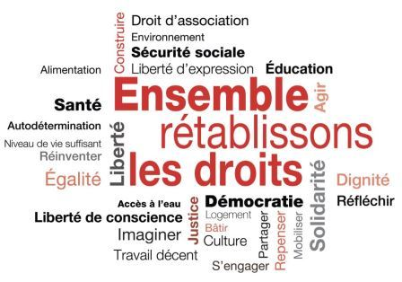
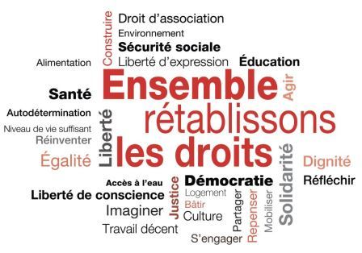

Mettre les droits humains à l’ordre du jour
Publié le :26 septembre 2022 | Lutte
Les droits civils, politiques, économiques, sociaux et culturels sont malmenés, et ce, de manière accentuée depuis quelques années.
Publié le :26 septembre 2022 | Lutte
Les droits civils, politiques, économiques, sociaux et culturels sont malmenés, et ce, de manière accentuée depuis quelques années.
Lettre publiée dans Le Devoir le 26 septembre 2022
Laurence Guénette, coordonnatrice
Alexandra Pierre, présidente
Julien Simard, administrateur
Quel paysage alarmant ! Les logements abordables et l’accès à une alimentation saine et suffisante manquent pour de nombreux Québécois et Québécoises. Les membres de communautés racisées observent avec inquiétude la montée de l’extrême droite et du nationalisme identitaire tout en continuant à subir des discriminations dans leur quotidien. Les travailleuses et travailleurs de la santé vivent une réalité violente qui s’est exacerbée avec la pandémie, amplifiée par la volonté des gouvernements d’étouffer leurs revendications par le biais des tribunaux et des décrets. Le droit à l’éducation des enfants fréquentant l’école publique est compromis par le manque de personnel. Les services publics souffrent des conséquences inévitables de l’austérité qu’on leur inflige depuis des années, ce qui met en péril de nombreux droits humains.
À ce portrait affolant s’ajoute une tendance antidémocratique grave, puisque l’état d’urgence sanitaire règne maintenant depuis plus de deux ans et a été prolongé jusqu’au 31 décembre prochain par le biais, notez l’ironie, de la Loi visant à mettre fin à l’urgence sanitaire. Dans le contexte de la présente élection, nous sommes particulièrement inquiétés par ce mode de gouvernance par décrets, qui a pour effet d’escamoter les débats essentiels à l’exercice démocratique.
Ainsi, les droits civils, politiques, économiques, sociaux et culturels sont malmenés, et ce, de manière accentuée depuis quelques années. Cela constitue un réel danger pour la démocratie, et pour la dignité de toutes et tous. À cet égard, le Québec s’ajoute malheureusement à la liste de bon nombre d’endroits dans le monde où l’état d’urgence pandémique s’est traduit par un recul démocratique tout en accentuant plusieurs situations préexistantes de non-respect des droits humains.Alors même qu’une conception libertarienne et populiste de la « liberté » s’ancre de manière plus ou moins durable dans certaines franges de la population et qu’une gouvernance néolibérale de type autoritaire se normalise, il est plus que temps de réaffirmer l’importance des Chartes et des conventions internationales qui devraient régir la conduite des États.
Par ailleurs, comme nous l’affirmions dans l’éditorial de la dernière revue Droits et libertés (printemps 2022), les titulaires des droits — c’est-à-dire nous — ont « le besoin voire le devoir d’être solidaires et organisés pour remettre les autorités face à leurs devoirs en termes de droits humains et de pratiques démocratiques, pour exposer nos vues sur l’immédiat et l’avenir ». Lors des deux débats des chefs, la perspective des droits humains brillait par son absence… alors qu’ils sont en filigrane de tous les enjeux de l’heure : du droit à un environnement sain au droit à la santé, en passant par le droit à l’éducation, le droit au logement et le droit à un niveau de vie suffisant. Rappelons que les États sont responsables d’assurer le respect et la mise en oeuvre de tous les droits de la personne, rien de moins. Ce sont ces droits qui doivent représenter la voie à suivre pour une société juste et inclusive, ce qui devrait être au coeur tant de la campagne électorale que des décisions qui seront prises par le prochain gouvernement.
Avec d’autres, la Ligue des droits et libertés (LDL), en tant qu’organisme indépendant et non partisan, contribue à cet effort incessant de promotion et de défense des droits humains. Cette année, la LDL fête ses 60 ans, un anniversaire important dans une conjoncture qui ne cesse de confirmer la pertinence de sa mission. Son expertise et sa perspective, acquises à même la réalisation de moult luttes et actions, sont utiles pour affronter une réalité parfois difficile à accepter : les droits et libertés doivent être constamment défendus devant les attaques répétées qu’ils subissent et inlassablement ramenés à l’ordre du jour.